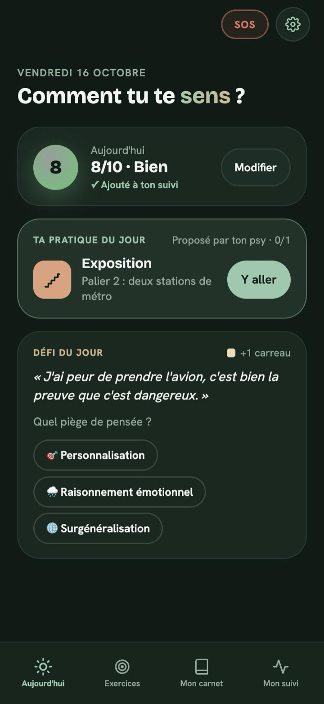
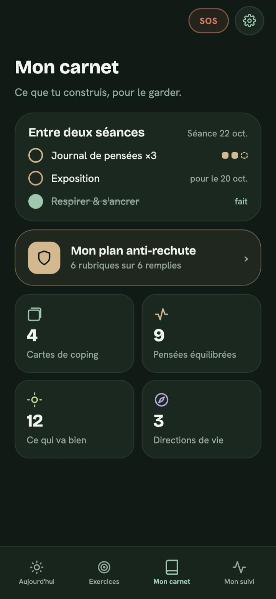
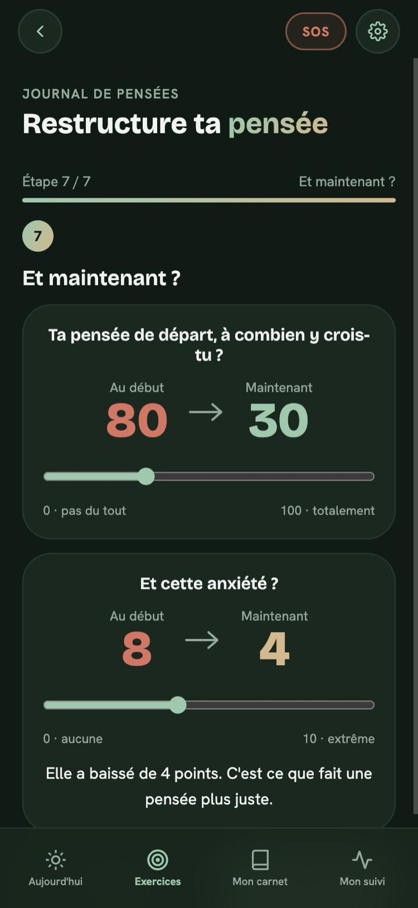
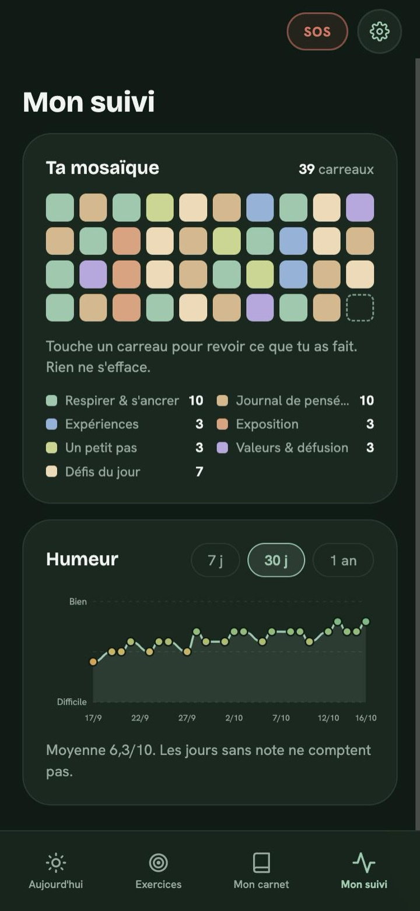

Ta thérapie continue
entre les séances.
Les exercices de TCC que ton psy te propose, à portée de main. Un par jour, à ton rythme.
Gratuit
Sans compte
Hors ligne

Comment ça marche



Et après la thérapie, l'app reste avec toi, avec ton plan anti-rechute.
Dans l'app
- Journal de pensées : 7 étapes pour repérer une pensée automatique, son piège et une pensée plus juste.
- Expériences et exposition : tu testes tes prédictions pas à pas, en notant ce que tu y crois avant et après.
- Petit pas, respiration, valeurs : activation comportementale, respiration guidée, défusion (ACT).
- Les exercices de ton psy : ceux proposés en séance passent en premier.
- Un récap pour ta prochaine séance : ce que tu as fait, à montrer si tu veux.
- Un plan anti-rechute : tes signaux et quoi faire, pour après la thérapie.
Conçue par un psychologue. Gratuite, sans pub, sans compte, hors ligne.
Ce que tu écris reste chez toi.
Pas de compte, pas de pub, aucune donnée envoyée. Tout reste sur ton téléphone. Confidentialité →
Questions
Non, mais l'app est pensée pour accompagner une thérapie.
Non. Tu peux lui montrer un récap si tu le souhaites.
L'app ne remplace pas un suivi. Appelle le 3114, gratuit, 24h/24. En cas de danger immédiat : 15 ou 112.